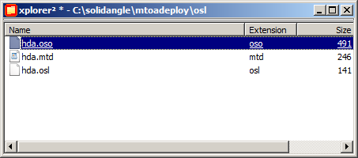
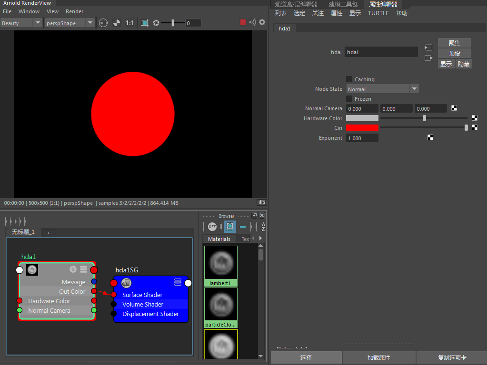

可以使用开放式着色语言创建自己的着色器。通过 OSL 着色器，我们可以使用闭包实现从简单纹理图案到完整材质在内的任何东西。
有关 Ai OSL 着色器，请单击此处。
有关使用 OSL 着色器的详细信息，请单击此处。
| 有关示例 .osl 着色器和 .mtd 文件，请单击此处。 |
|---|
如果您在渲染时使用文本编辑器更改着色器代码，需要在 Arnold 渲染视图中“更新整个场景”。
就像其他任何第三方着色器库一样，放置在着色器搜索路径中的 OSL 着色器将自动注册为 Arnold 着色器节点。OSL 着色器参数会转化为 Arnold 参数。加载后，可以采用与 C++ 着色器相同的方式对它们进行检查、实例化和链接。
要使用 Arnold 直接渲染 OSL 着色器，必须执行以下操作：
ARNOLD_PLUGIN_PATH=C:\shaders\osl
有关详细信息，请参见“第三方着色器”页面。

使用 MtoA 渲染的 .osl 着色器
